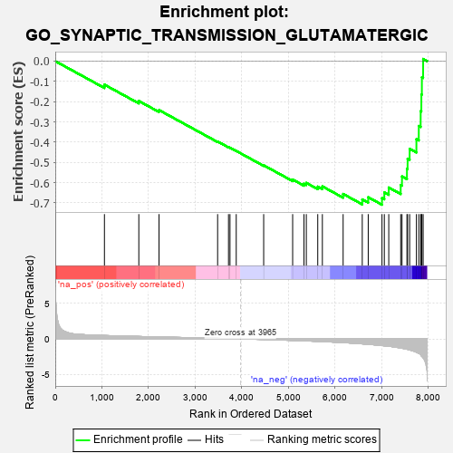
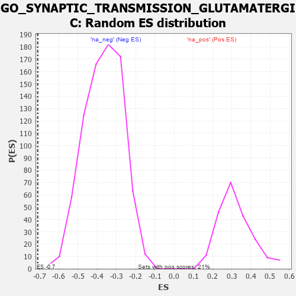

| | | Dataset | 7d |
| Phenotype | NoPhenotypeAvailable |
| Upregulated in class | na_neg |
| GeneSet | GO_SYNAPTIC_TRANSMISSION_GLUTAMATERGIC |
| Enrichment Score (ES) | -0.7094068 |
| Normalized Enrichment Score (NES) | -1.9361798 |
| Nominal p-value | 0.0 |
| FDR q-value | 0.0026412448 |
| FWER p-Value | 0.026 |
Table: GSEA Results Summary

Fig 1: Enrichment plot: GO_SYNAPTIC_TRANSMISSION_GLUTAMATERGIC
Profile of the Running ES Score & Positions of GeneSet Members on the Rank Ordered List
| PROBE | GENE SYMBOL | GENE_TITLE | RANK IN GENE LIST | RANK METRIC SCORE | RUNNING ES | CORE ENRICHMENT | | 1 | MEF2C | | | 1054 | 0.473 | -0.1161 | No |
| 2 | GRM8 | | | 1791 | 0.339 | -0.1969 | No |
| 3 | GRIK3 | | | 2224 | 0.272 | -0.2418 | No |
| 4 | CDK5 | | | 3480 | 0.080 | -0.3970 | No |
| 5 | NF1 | | | 3713 | 0.040 | -0.4248 | No |
| 6 | HTR1B | | | 3745 | 0.035 | -0.4275 | No |
| 7 | DGKZ | | | 3879 | 0.015 | -0.4437 | No |
| 8 | LRRK2 | | | 4467 | -0.087 | -0.5146 | No |
| 9 | DRD2 | | | 5088 | -0.221 | -0.5849 | No |
| 10 | NPY2R | | | 5331 | -0.281 | -0.6055 | No |
| 11 | GRIN1 | | | 5381 | -0.291 | -0.6015 | No |
| 12 | ROR2 | | | 5626 | -0.353 | -0.6199 | No |
| 13 | DGKI | | | 5725 | -0.384 | -0.6188 | No |
| 14 | GRID2 | | | 6170 | -0.528 | -0.6562 | No |
| 15 | CLN3 | | | 6580 | -0.699 | -0.6832 | Yes |
| 16 | EGFR | | | 6708 | -0.765 | -0.6724 | Yes |
| 17 | CCR2 | | | 7003 | -0.939 | -0.6765 | Yes |
| 18 | GRM5 | | | 7053 | -0.969 | -0.6488 | Yes |
| 19 | SYT1 | | | 7148 | -1.033 | -0.6244 | Yes |
| 20 | GRM1 | | | 7404 | -1.272 | -0.6120 | Yes |
| 21 | KMO | | | 7432 | -1.308 | -0.5696 | Yes |
| 22 | GRIK1 | | | 7538 | -1.454 | -0.5319 | Yes |
| 23 | GRIK2 | | | 7552 | -1.471 | -0.4821 | Yes |
| 24 | GRM2 | | | 7596 | -1.547 | -0.4333 | Yes |
| 25 | GRM3 | | | 7741 | -1.880 | -0.3856 | Yes |
| 26 | GRIK5 | | | 7792 | -2.044 | -0.3203 | Yes |
| 27 | GRIK4 | | | 7832 | -2.234 | -0.2470 | Yes |
| 28 | GRM4 | | | 7847 | -2.393 | -0.1649 | Yes |
| 29 | GRID1 | | | 7858 | -2.465 | -0.0799 | Yes |
| 30 | GRIA2 | | | 7885 | -2.684 | 0.0108 | Yes |
Table: GSEA details [plain text format]

Fig 2: GO_SYNAPTIC_TRANSMISSION_GLUTAMATERGIC: Random ES distribution
Gene set null distribution of ES for GO_SYNAPTIC_TRANSMISSION_GLUTAMATERGIC